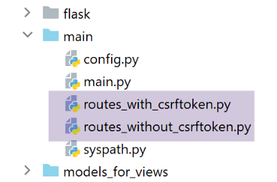
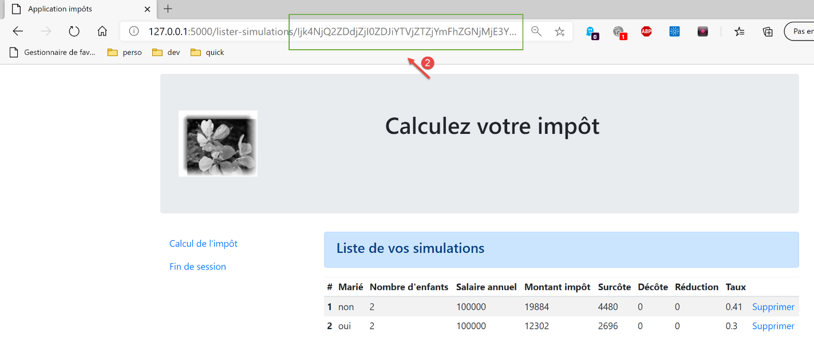
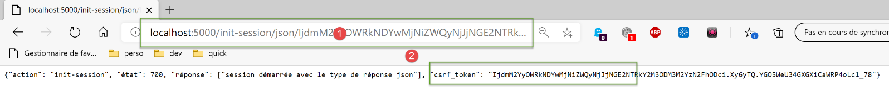

34. Exercice d’application : version 14
Le dossier [http-servers/09] de la version 14 est obtenu par recopie du dossier [http-servers/08] de la version 13.
34.1. Introduction
CSRF (Cross Site Request Forgery) est une technique de vol de session. Elle est expliquée ainsi dans Wikipedia (https://fr.wikipedia.org/wiki/Cross-site_request_forgery):
- Malorie arrive à connaitre le lien qui permet de supprimer le message en question.
- Malorie envoie un message à Alice contenant une pseudo-image à afficher (qui est en fait un script). L'URL de l'image est le lien vers le script permettant de supprimer le message désiré.
- Alice doit avoir une session ouverte dans son navigateur pour le site visé par Malorie. C'est une condition requise pour que l'attaque réussisse de façon silencieuse sans requérir une demande d'authentification qui alerterait Alice. Cette session doit disposer des droits requis pour exécuter la requête destructrice de Malorie. Il n'est pas nécessaire qu'un onglet du navigateur soit ouvert sur le site cible ni même que le navigateur soit démarré. Il suffit que la session soit active.
- Alice lit le message de Malorie, son navigateur utilise la session ouverte d'Alice et ne demande pas d'authentification interactive. Il tente de récupérer le contenu de l'image. En faisant cela, le navigateur actionne le lien et supprime le message, il récupère une page web texte comme contenu pour l'image. Ne reconnaissant pas le type d'image associé, il n'affiche pas d'image et Alice ne sait pas que Malorie vient de lui faire supprimer un message contre son gré.
Même expliqué comme ça, la technique du CSRF est difficile à comprendre. Faisons un schéma :

- en [1-2], Alice communique avec le forum (Site A). Ce forum maintient une session pour chaque utilisateur. Le navigateur d’Alice stocke localement ce cookie de session et le renvoie à chaque fois qu’il fait une nouvelle requête au site A ;
- en [3], Malorie envoie un message à Alice. Celle-ci le lit avec son navigateur. Le message lu est au format HTML et contient un lien vers une image du site B. En fait ce lien est un lien vers un script Javascript qui s’exécute une fois arrivé sur le navigateur d’Alice ;
- ce script Javascript réalise alors une requête vers le site A. Le navigateur d’Alice envoie alors automatiquement la requête avec le cookie de session stocké localement. C’est ici que se produit l’attaque : Malorie a réussi à interroger le site A avec les droits (session) de Alice. Ensuite, peu importe ce qui se passe, l’attaque a eu lieu ;
Pour contrer ce type d’attaque, le site A peut procéder de la façon suivante :
- à chaque échange [1-2] avec Alice, le site A envoie une clé, appelée par la suite token (jeton) CSRF, qu’Alice doit lui renvoyer lors de la requête suivante. Ainsi Alice doit envoyer à chaque requête deux informations :
- le cookie de session ;
- le token CSRF reçu lors de la réponse à sa dernière requête au site A ;
La protection est là : si le navigateur renvoie automatiquement au site A le cookie de session, il ne le fait pas pour le token CSRF. Pour cette raison, l’échange 6-7 fait par le script d’attaque sera refusé car la requête 6 n’aura pas envoyé le jeton CSRF ;
Le site A peut envoyer à Alice le jeton CSRF de diverses façons pour une application HTML :
- il peut à chaque requête envoyer une page HTML où tous les liens auront le jeton CSRF, par exemple [http://siteA/chemin/csrf_token]. Lors de la requête suivante, Alice cliquant sur l’un de ces liens, le site A n’aura qu’à récupérer le jeton CSRF dans l’URL de la requête et vérifier qu’il est correct. C’est ce qui sera fait ici ;
- il peut, pour les pages HTML contenant un formulaire, envoyer celui-ci avec un champ caché [input type=’hidden’] contenant le jeton CSRF. Celui-ci sera alors posté automatiquement avec le formulaire lorsqu’Alice validera la page. Le site A récupèrera le jeton CSRF dans le corps (body) de la requête ;
- d’autres techniques sont envisageables ;
34.2. Configuration

Nous introduisons dans la configuration [parameters] de l’application deux booléens :
- [with_redissession] : à True, l’application utilise une session Redis. A False, l’application utilise une session Flask normale ;
- [with_csrftoken] : à True, les URL de l’application contiennent un jeton CSRF ;
# durée pause thread en secondes
"sleep_time": 0,
# serveur Redis
"with_redissession": True,
"redis": {
"host": "127.0.0.1",
"port": 6379
},
# token csrf
"with_csrftoken": False,
34.3. Implémentation CSRF
Nous allons faire en sorte que lorsque :
config['parameters']['with_csrftoken']
vaut [True], l’application envoie au navigateur client des pages web dont les liens contiendront un jeton CSRF.
34.3.1. Le module [flask_wtf]
L’implémentation du jeton CSRF sera faite avec le module [flask_wtf] que nous installons dans un terminal PyCharm :
(venv) C:\Data\st-2020\dev\python\cours-2020\python3-flask-2020\packages>pip install flask_wtf
Collecting flask_wtf
…
34.3.2. Les modèles des vues
Nous introduisons une nouvelle classe dans les modèles :

La classe [AbstractBaseModelForView] est la suivante :
from abc import abstractmethod
from flask import Request
from flask_wtf.csrf import generate_csrf
from werkzeug.local import LocalProxy
from InterfaceModelForView import InterfaceModelForView
class AbstractBaseModelForView(InterfaceModelForView):
@abstractmethod
def get_model_for_view(self, request: Request, session: LocalProxy, config: dict, résultat: dict) -> dict:
pass
def get_csrftoken(self, config: dict):
# csrf_token
if config['parameters']['with_csrftoken']:
return f"/{generate_csrf()}"
else:
return ""
- ligne 9 : la classe [AbstractBaseModelForView] implémente l’interface [InterfaceModelForView] implémentée par les classes des modèles ;
- lignes 11-13 : la méthode [get_model_for_view] n’est pas implémentée ;
- lignes 15-20 : la méthode [get_csrftoken] génère le jeton CSRF si l’application a été configurée pour les utiliser. Selon les cas, la fonction rend un jeton précédé du signe / sinon une chaîne vide. La fonction [generate_csrf] a la particularité de toujours générer la même valeur pour une requête client donnée. Le traitement d’une requête implique l’exécution de différentes fonctions. Utiliser [generate_csrf] dans celles-ci génère toujours la même valeur. Lors de la requête suivante, en revanche, un nouveau jeton CSRF est généré ;
Tous les modèles M de vue V inclueront le jeton CSRF de la façon suivante :
class ModelForAuthentificationView(AbstractBaseModelForView):
def get_model_for_view(self, request: Request, session: LocalProxy, config: dict, résultat: dict) -> dict:
# on encapsule les données de la pagé dans modèle
modèle = {}
…
# jeton csrf
modèle['csrf_token'] = super().get_csrftoken(config)
# on rend le modèle
return modèle
- chaque classe de modèle étend la classe de base [AbstractBaseModelForView] ;
- ligne 8 : le jeton CSRF est demandé à la classe parent. On obtient soit la chaîne vide, soit une chaîne du genre [/Ijk4NjQ2ZDdjZjI0ZDJiYTVjZTZjYmFhZGNjMjE3Y2U5M2I3ODI0NzYi.Xy5Okg.n-kSR_nslkndfT7AFVy2UDtdb8c] ;
34.3.3. Les vues
De ce qu’on vient de voir, toutes les vues V auront dans leur modèle M le jeton CSRF. Elles pourront donc l’utiliser dans les liens qu’elles contiennent. Prenons quelques exemples :
Le fragment d’authentification [v_authentification.html]
<!-- formulaire HTML - on poste ses valeurs avec l'action [authentifier-utilisateur] -->
<form method="post" action="/authentifier-utilisateur{{modèle.csrf_token}}">
<!-- titre -->
<div class="alert alert-primary" role="alert">
<h4>Veuillez vous authentifier</h4>
</div>
…
</form>
- ligne 2 : d’après ce qui vient d’être vu, l’URL de l’attribut [action] sera :
[/authentifier-utilisateur/Ijk4NjQ2ZDdjZjI0ZDJiYTVjZTZjYmFhZGNjMjE3Y2U5M2I3ODI0NzYi.Xy5Okg.n-kSR_nslkndfT7AFVy2UDtdb8c]
ou
[/authentifier-utilisateur]
selon que l’application a été configurée pour utiliser ou non des jetons CSRF ;
Le fragment de calcul de l’impôt [v-calcul-impot.html]
<!-- formulaire HTML posté -->
<form method="post" action="/calculer-impot{{modèle.csrf_token}}">
<!-- message sur 12 colonnes sur fond bleu -->
<div class="col-md-12">
<div class="alert alert-primary" role="alert">
<h4>Remplissez le formulaire ci-dessous puis validez-le</h4>
</div>
</div>
…
</form>
Le fragment des simulations [v-liste-simulations.html]
{% if modèle.simulations is undefined or modèle.simulations|length==0 %}
<!-- message sur fond bleu -->
<div class="alert alert-primary" role="alert">
<h4>Votre liste de simulations est vide</h4>
</div>
{% endif %}
{% if modèle.simulations is defined and modèle.simulations|length!=0 %}
<!-- message sur fond bleu -->
<div class="alert alert-primary" role="alert">
<h4>Liste de vos simulations</h4>
</div>
<!-- tableau des simulations -->
<table class="table table-sm table-hover table-striped">
…
<!-- corps du tableau (données affichées) -->
<tbody>
<!-- on affiche chaque simulation en parcourant le tableau des simulations -->
{% for simulation in modèle.simulations %}
<!-- affichage d'une ligne du tableau avec 6 colonnes - balise <tr> -->
<!-- colonne 1 : entête ligne (n° simulation) - balise <th scope='row' -->
<!-- colonne 2 : valeur paramètre [marié] - balise <td> -->
<!-- colonne 3 : valeur paramètre [enfants] - balise <td> -->
<!-- colonne 4 : valeur paramètre [salaire] - balise <td> -->
<!-- colonne 5 : valeur paramètre [impôt] (de l'impôt) - balise <td> -->
<!-- colonne 6 : valeur paramètre [surcôte] - balise <td> -->
<!-- colonne 7 : valeur paramètre [décôte] - balise <td> -->
<!-- colonne 8 : valeur paramètre [réduction] - balise <td> -->
<!-- colonne 9 : valeur paramètre [taux] (de l'impôt) - balise <td> -->
<!-- colonne 10 : lien de suppression de la simulation - balise <td> -->
<tr>
<th scope="row">{{simulation.id}}</th>
<td>{{simulation.marié}}</td>
<td>{{simulation.enfants}}</td>
<td>{{simulation.salaire}}</td>
<td>{{simulation.impôt}}</td>
<td>{{simulation.surcôte}}</td>
<td>{{simulation.décôte}}</td>
<td>{{simulation.réduction}}</td>
<td>{{simulation.taux}}</td>
<td><a href="/supprimer-simulation/{{simulation.id}}{{modèle.csrf_token}}">Supprimer</a></td>
</tr>
{% endfor %}
</tr>
</tbody>
</table>
{% endif %}
Le fragment du menu [v-menu.html]
<!-- menu Bootstrap -->
<nav class="nav flex-column">
<!-- affichage d'une liste de liens HTML -->
{% for optionMenu in modèle.optionsMenu %}
<a class="nav-link" href="{{optionMenu.url}}{{modèle.csrf_token}}">{{optionMenu.text}}</a>
{% endfor %}
</nav>
34.3.4. Les routes
Il y a désormais deux types de routes, selon que celles-ci utilisent ou non un jeton CSRF :

- [routes_without_csrftoken] sont les routes sans jeton CSRF. Ce sont les routes de la version précédente ;
- [routes_with_csrftoken] sont les routes avec jeton CSRF.
Dans [routes_with_csrftoken], les routes ont désormais un paramètre supplémentaire, le jeton CSRF :
# le front controller
def front_controller() -> tuple:
# on fait suivre la requête au contrôleur principal
main_controller = config['mvc']['controllers']['main-controller']
return main_controller.execute(request, session, config)
@app.route('/', methods=['GET'])
def index() -> tuple:
# redirection vers /init-session/html
return redirect(url_for("init_session", type_response="html", csrf_token=generate_csrf()), status.HTTP_302_FOUND)
# init-session
@app.route('/init-session/<string:type_response>/<string:csrf_token>', methods=['GET'])
def init_session(type_response: str, csrf_token: str) -> tuple:
# on exécute le contrôleur associé à l'action
return front_controller()
# authentifier-utilisateur
@app.route('/authentifier-utilisateur/<string:csrf_token>', methods=['POST'])
def authentifier_utilisateur(csrf_token: str) -> tuple:
# on exécute le contrôleur associé à l'action
return front_controller()
# calculer-impot
@app.route('/calculer-impot/<string:csrf_token>', methods=['POST'])
def calculer_impot(csrf_token: str) -> tuple:
# on exécute le contrôleur associé à l'action
return front_controller()
# calcul de l'impôt par lots
@app.route('/calculer-impots/<string:csrf_token>', methods=['POST'])
def calculer_impots(csrf_token: str):
# on exécute le contrôleur associé à l'action
return front_controller()
# lister-simulations
@app.route('/lister-simulations/<string:csrf_token>', methods=['GET'])
def lister_simulations(csrf_token: str) -> tuple:
# on exécute le contrôleur associé à l'action
return front_controller()
# supprimer-simulation
@app.route('/supprimer-simulation/<int:numero>/<string:csrf_token>', methods=['GET'])
def supprimer_simulation(numero: int, csrf_token: str) -> tuple:
# on exécute le contrôleur associé à l'action
return front_controller()
# fin-session
@app.route('/fin-session/<string:csrf_token>', methods=['GET'])
def fin_session(csrf_token: str) -> tuple:
# on exécute le contrôleur associé à l'action
return front_controller()
# afficher-calcul-impot
@app.route('/afficher-calcul-impot/<string:csrf_token>', methods=['GET'])
def afficher_calcul_impot(csrf_token: str) -> tuple:
# on exécute le contrôleur associé à l'action
return front_controller()
# get-admindata
@app.route('/get-admindata/<string:csrf_token>', methods=['GET'])
def get_admindata(csrf_token: str) -> tuple:
# on exécute le contrôleur associé à l'action
return front_controller()
Toutes les routes ont désormais le jeton CSRF dans leurs paramètres, même la route [/init-session]. Cela signifie que le client ne peut pas démarrer l’application en tapant directement l’URL [/init-session/html] car il y manquera le jeton CSRF. Il doit désormais obligatoirement passer par l’URL [/] des lignes 7-10.
Le choix des routes est fait dans le script principal [main] :
…
# le thread principal n'a plus besoin du logger
logger.close()
# s'il y a eu erreur on s'arrête
if erreur:
sys.exit(2)
# import des routes de l'application web
if config['parameters']['with_csrftoken']:
import routes_with_csrftoken as routes
else:
import routes_without_csrftoken as routes
# configuration des routes
routes.config = config
# démarrage application Flask
routes.execute(__name__)
- lignes 9-13 : choix des routes selon que l’application utilise ou non des jetons CSRF ;
34.3.5. Le contrôleur [MainController]
A chaque requête, le serveur doit vérifier la présence du jeton CSRF. Nous ferons cela dans le contrôleur principal [MainController] qui voit passer toutes les requêtes :
from flask_wtf.csrf import generate_csrf, validate_csrf
…
# on traite la requête
try:
# logger
logger = Logger(config['parameters']['logsFilename'])
…
# on récupère les éléments du path
params = request.path.split('/')
# l'action est le 1er élément
action = params[1]
…
if config['parameters']['with_csrftoken']:
# le csrf_token est le dernier élément du path
csrf_token = params.pop()
# on vérifie la validité du token
# une exception sera lancée si le csrf_token n'est pas celui attendu
validate_csrf(csrf_token)
…
except ValidationError as exception:
# csrf token invalide
résultat = {"action": action, "état": 121, "réponse": [f"{exception}"]}
status_code = status.HTTP_400_BAD_REQUEST
except BaseException as exception:
# autres exceptions (inattendues)
résultat = {"action": action, "état": 131, "réponse": [f"{exception}"]}
status_code = status.HTTP_400_BAD_REQUEST
finally:
pass
# on ajoute le csrf_token au résultat
résultat['csrf_token'] = generate_csrf()
# on logue le résultat envoyé au client
log = f"[MainController] {résultat}\n"
logger.write(log)
- ligne 20 : on récupère le jeton CSRF dans l’URL de la requête du type [http://machine :port/chemin/action/param1/param2/…/csrf_token]. Le jeton de session est toujours le dernier élément de l’URL ;
- ligne 23 : la validité du jeton CSRF récupéré dans l’URL avec le jeton CSRF de la session est vérifiée. S’il n’est pas valide, la fonction [validate_csrf] lance une exception de type [ValidationError] (ligne 27) ;
- ligne 41 : le jeton CSRF est mis dans le résultat envoyé au client. Les clients jSON et XML en auront besoin. En effet, ces clients ne reçoivent pas de pages HTML avec le jeton CSRF dans les liens contenus dans les pages. Ils le recevront donc dans le résultat jSON ou XML envoyé par le serveur ;
Note : la fonction [validate_csrf] de la ligne 23 ne vérifie pas une concordance stricte. Le jeton CSRF est mémorisé dans la session avec la clé [csrf_token]. Les test semblent montrer qu’un jeton CSRF est valide s’il a été généré au cours de la session. Ainsi si manuellement, dans l’URL affichée dans le navigateur, par exemple (/lister-simulations/xyz), vous remplacez le jeton [xyz] CSRF par un autre [abc] déjà reçu lors d’une précédente action, l’action [/lister-simulations] va réussir ;
34.4. Tests avec un navigateur
On :
- lance le serveur avec le paramètre [with_csrftoken] à [True] ;
- demande l’URL [http://localhost:5000] avec un navigateur ;

- en [1], le jeton CSRF ;
Faisons des manipulations jusqu’à avoir une liste de simulations :

Maintenant, tapons à la main, l’URL [http://localhost:5000/supprimer-simulation/1/x] pour supprimer la simulation d’id=1. On met volontairement un jeton CSRF incorrect pour voir ce qui se passe. La réponse du serveur est la suivante :

Note 1 : il n’est pas sûr que la méthode utilisée ici soit toujours suffisante pour contrer les attaques CSRF. Revenons au schéma de l’attaque :
Si le script Javascript téléchargé en [5] est capable de lire l’historique du navigateur utilisé par Alice, il sera capable de récupérer les URL exécutées par le navigateur, des URL telles que [/cible/csrf_token]. Il pourra alors récupérer le jeton de session [csrf_token] et faire son attaque en [6-7]. Néanmoins, le navigateur autorise uniquement l’exploitation de l’historique de la fenêtre du navigateur dans laquelle s’exécute le script. Si donc Alice n’utilise pas la même fenêtre pour travailler avec le site A [1-2] et lire le message de Malorie [3], l’attaque CSRF ne sera pas possible.
34.5. Clients console
Une autre façon de tester la version 14 de l’application est de reprendre les tests de la version 12 et de les adapter au nouveau serveur.

Le dossier [impots/http-clients/09] est obtenu initialement par recopie du dossier [impots/http-clients/07]. Il est ensuite modifié.
Revenons aux routes qui initialisent une session :
# racine de l'application
@app.route('/', methods=['GET'])
def index() -> tuple:
# redirection vers /init-session/html
return redirect(url_for("init_session", type_response="html", csrf_token=generate_csrf()), status.HTTP_302_FOUND)
# init-session-with-csrf-token
@app.route('/init-session/<string:type_response>/<string:csrf_token>', methods=['GET'])
def init_session(type_response: str, csrf_token: str) -> tuple:
# on exécute le contrôleur associé à l'action
return front_controller()
Aucune de ces routes ne convient pour initialiser une session jSON ou XML :
- lignes 2-5 : la route [/] initialise une session HTML ;
- lignes 8-11 : la route [/init-session] nécessite un jeton CSRF qu’on ne connaît pas ;
Nous décidons d’ajouter une nouvelle route au serveur :
# init-session-without-csrftoken
@app.route('/init-session-without-csrftoken/<string:type_response>', methods=['GET'])
def init_session_without_csrftoken(type_response: str) -> tuple:
# redirection vers /init-session/type_response
return redirect(url_for("init_session", type_response=type_response, csrf_token=generate_csrf()), status.HTTP_302_FOUND)
- ligne 2 : la nouvelle route. Elle n’attend pas de jeton CSRF. On est ainsi revenu à la route [/init-session] de la version précédente ;
- lignes 4-5 : on redirige le client (jSON, XML, HTML) vers la route [/init-session] ayant le jeton CSRF dans ses paramètres ;
On peut essayer cette nouvelle route avec un navigateur :

La réponse du serveur (configuré avec [with_csrftoken=True]) est la suivante :

- en [1], le serveur a été redirigé vers la route [/init-session] avec jeton CSRF dans l’URL ;
- en [2], le jeton CSRF est dans le dictionnaire jSON envoyé par le serveur associé à la clé [csrf_token] ;
Revenons au code du client :

Nous modifions la configuration [config] de la façon suivante :
config.update({
# fichier des contribuables
"taxpayersFilename": f"{script_dir}/../data/input/taxpayersdata.txt",
# fichier des résultats
"resultsFilename": f"{script_dir}/../data/output/résultats.json",
# fichier des erreurs
"errorsFilename": f"{script_dir}/../data/output/errors.txt",
# fichier de logs
"logsFilename": f"{script_dir}/../data/logs/logs.txt",
# le serveur de calcul de l'impôt
"server": {
"urlServer": "http://127.0.0.1:5000",
"user": {
"login": "admin",
"password": "admin"
},
"url_services": {
"calculate-tax": "/calculer-impot",
"get-admindata": "/get-admindata",
"calculate-tax-in-bulk-mode": "/calculer-impots",
"init-session": "/init-session-without-csrftoken",
"end-session": "/fin-session",
"authenticate-user": "/authentifier-utilisateur",
"get-simulations": "/lister-simulations",
"delete-simulation": "/supprimer-simulation",
}
},
# mode debug
"debug": True,
# csrf_token
"with_csrftoken": True,
}
)
…
# route init-session
url_services = config['server']['url_services']
if config['with_csrftoken']:
url_services['init-session'] = '/init-session-without-csrftoken'
else:
url_services['init-session'] = '/init-session'
- ligne 31 : un booléen indiquera au client si le serveur auquel il s’adresse travaille ou non avec des jetons CSRF ;
- lignes 37-40 : on fixe l’URL de service de l’action [init-session] :
- si le serveur utilise des jetons CSRF alors l’URL de service est [/init-session-without-csrftoken] ;
- sinon l’URL de service est [/init-session] ;
La route [/init-session-without-csrftoken] a été présentée. Elle permet à un client jSON / XML de démarrer une session avec le serveur sans posséder de jeton CSRF. Il trouvera ce jeton dans la réponse du serveur.
Nous modifions ensuite la classe [ImpôtsDaoWithHttpSession] implémentant la couche [dao] du client :

# imports
import json
import requests
import xmltodict
from flask_api import status
from AbstractImpôtsDao import AbstractImpôtsDao
from AdminData import AdminData
from ImpôtsError import ImpôtsError
from InterfaceImpôtsDaoWithHttpSession import InterfaceImpôtsDaoWithHttpSession
from TaxPayer import TaxPayer
class ImpôtsDaoWithHttpSession(InterfaceImpôtsDaoWithHttpSession):
# constructeur
def __init__(self, config: dict):
# initialisation parent
AbstractImpôtsDao.__init__(self, config)
# mémorisation éléments de la configuration
# config générale
self.__config = config
# serveur
self.__config_server = config["server"]
# services
self.__config_services = config["server"]['url_services']
# mode debug
self.__debug = config["debug"]
# logger
self.__logger = None
# cookies
self.__cookies = None
# type de session (json, xml)
self.__session_type = None
# jeton CSRF
self.__csrf_token = None
# étape request / response
def get_response(self, method: str, url_service: str, data_value: dict = None, json_value=None):
# [method] : méthode HTTP GET ou POST
# [url_service] : URL de service
# [data] : paramètres du POST en x-www-form-urlencoded
# [json] : paramètres du POST en json
# [cookies]: cookies à inclure dans la requête
# on doit avoir une session XML ou JSON, sinon on ne pourra pas gérer la réponse
if self.__session_type not in ['json', 'xml']:
raise ImpôtsError(73, "il n'y a pas de session valide en cours")
# on ajoute le jeton CSRF à l'URL de service
if self.__csrf_token:
url_service = f"{url_service}/{self.__csrf_token}"
# exécution de la requête
response = requests.request(method,
url_service,
data=data_value,
json=json_value,
cookies=self.__cookies,
allow_redirects=True)
# mode debug ?
if self.__debug:
# logueur
if not self.__logger:
self.__logger = self.__config['logger']
# on logue
self.__logger.write(f"{response.text}\n")
# résultat
if self.__session_type == "json":
résultat = json.loads(response.text)
else: # xml
résultat = xmltodict.parse(response.text[39:])['root']
# on récupère les cookies de la réponse s'il y en a
if response.cookies:
self.__cookies = response.cookies
# on récupère le jeton CSRF
if self.__config['with_csrftoken']:
self.__csrf_token = résultat.get('csrf_token', None)
# code de statut
status_code = response.status_code
# si code de statut différent de 200 OK
if status_code != status.HTTP_200_OK:
raise ImpôtsError(35, résultat['réponse'])
# on rend le résultat
return résultat['réponse']
def init_session(self, session_type: str):
# on note le type de la session
self.__session_type = session_type
# on supprime le jeton CSRF des précédents appels
self.__csrf_token = None
# on demande l'URL de l'action init-session
url_service = f"{self.__config_server['urlServer']}{self.__config_services['init-session']}/{session_type}"
# exécution requête
self.get_response("GET", url_service)
…
- lignes 38-92 : la gestion du jeton CSRF se passe principalement dans la méthode [get_response] ;
- ligne 60 : le point important est le paramètre [allow_redirects=True]. C’est sa valeur par défaut mais on a tenu à le mettre en relief ;
Lorsqu’on est en mode [with_csrftoken=True] :
- les clients commencent leur dialogue avec le serveur par l’appel à la route [/init-session_without_csftoken/type_response] ;
- le serveur répond à cette requête par une redirection vers la route [/init-session/type_response/csrf_token] ;
- à cause du paramètre [allow_redirects=True], cette redirection va être suivie par le client [requests] ;
- le jeton CSRF sera trouvé dans le résultat récupéré aux lignes 72 et 74 associé à la clé [csrf_token] ;
Lorsqu’on est en mode [with_csrftoken=False] :
- (suite)
- les clients commencent leur dialogue avec le serveur par l’appel à la route [/init-session /type_response] ;
- le serveur répond à cette requête par une redirection vers la route [/init-session/type_response] ;
- à cause du paramètre [allow_redirects=True], cette redirection va être suivie par le client [requests] ;
- il n’y a pas de jeton CSRF à récupérer aux lignes 81-82. La propriété [self.__csrf_token] reste alors toujours à None (ligne 36) ;
- lignes 51-52 : pour toutes les requêtes suivantes, le jeton CSRF, s’il existe, est ajouté à la route initiale ;
- lignes 81-82 : le nouveau jeton que génère le serveur à chaque nouvelle requête du client est mémorisé localement pour être renvoyé ligne 52 à la requête suivante ;
Par ailleurs, la méthode [init_session] évolue un peu :
def init_session(self, session_type: str):
# on note le type de la session
self.__session_type = session_type
# on supprime le jeton CSRF des précédents appels
self.__csrf_token = None
# on demande l'URL de l'action init-session
url_service = f"{self.__config_server['urlServer']}{self.__config_services['init-session']}/{session_type}"
# exécution requête
self.get_response("GET", url_service)
Il faut se rappeler ici qu’on a créé une route [/init-session-without-csrftoken/<type-response>] pour initialiser le dialogue client / serveur sans jeton CSRF. Or nous avons vu que la méthode [get_response] appelée ligne 12 du code ajoute systématiquement à la fin de l’URL de service le jeton CSRF mémorisé dans [self.__csrf_token]. C’est pourquoi ligne 6 du code on supprime ce jeton CSRF s’il existait.
C’est tout. Pour les tests, on exécutera :
- les clients console [main, main2, main3] ;
- les classes de test [Test1HttpClientDaoWithSession] et [Test2HttpClientDaoWithSession] ;
en mettant successivement à True puis False, le paramètre de configuration [with_csrftoken].

Voici comme exemple les logs obtenus à l’exécution du client [main json] avec [with_csrftoken=True] :
2020-08-08 16:33:23.317903, MainThread : début du calcul de l'impôt des contribuables
2020-08-08 16:33:23.317903, Thread-1 : début du calcul de l'impôt des 4 contribuables
2020-08-08 16:33:23.317903, Thread-2 : début du calcul de l'impôt des 2 contribuables
2020-08-08 16:33:23.317903, Thread-3 : début du calcul de l'impôt des 4 contribuables
2020-08-08 16:33:23.317903, Thread-4 : début du calcul de l'impôt des 1 contribuables
2020-08-08 16:33:23.379221, Thread-2 : {"action": "init-session", "état": 700, "réponse": ["session démarrée avec le type de réponse json"], "csrf_token": "ImFiZmZkYjZmMzFkZDc2YWRjNWYwOGM0NTBmMGM4ODJjYzViOWI4NGEi.Xy63sw.H5L0--yWsvfaWvggrGw78z5VnN0"}
2020-08-08 16:33:23.381073, Thread-4 : {"action": "init-session", "état": 700, "réponse": ["session démarrée avec le type de réponse json"], "csrf_token": "ImY5YzQyMjlkYzcyYmM4YmZiMGI0NWY5MjE4MzIzNDExZjc0MGQ3MWQi.Xy63sw.q6olg7IP_g2ro_RBFRCX1BX90g8"}
2020-08-08 16:33:23.386982, Thread-3 : {"action": "init-session", "état": 700, "réponse": ["session démarrée avec le type de réponse json"], "csrf_token": "IjkxZGNlN2YyMmUxMjQ0M2Y0MTdjNDQ4ZmQ1MDMxZjkwNjBhNzAzZjMi.Xy63sw.-6buL11No3UJBlElpW4tX4B-lp0"}
2020-08-08 16:33:23.390269, Thread-1 : {"action": "init-session", "état": 700, "réponse": ["session démarrée avec le type de réponse json"], "csrf_token": "IjIxNmU4MDQyZDFmZmIyZDlmZjE4MzNlNDUzYzFjMGYxMWYxYzEwNGYi.Xy63sw.fgs6Cm2owsJf4NjTm7gKrVESabI"}
2020-08-08 16:33:23.413206, Thread-2 : {"action": "authentifier-utilisateur", "état": 200, "réponse": "Authentification réussie", "csrf_token": "ImFiZmZkYjZmMzFkZDc2YWRjNWYwOGM0NTBmMGM4ODJjYzViOWI4NGEi.Xy63sw.H5L0--yWsvfaWvggrGw78z5VnN0"}
2020-08-08 16:33:23.422877, Thread-2 : {"action": "calculer-impots", "état": 1500, "réponse": [{"marié": "non", "enfants": 3, "salaire": 100000, "impôt": 16782, "surcôte": 7176, "taux": 0.41, "décôte": 0, "réduction": 0, "id": 1}, {"marié": "oui", "enfants": 3, "salaire": 100000, "impôt": 9200, "surcôte": 2180, "taux": 0.3, "décôte": 0, "réduction": 0, "id": 2}], "csrf_token": "ImFiZmZkYjZmMzFkZDc2YWRjNWYwOGM0NTBmMGM4ODJjYzViOWI4NGEi.Xy63sw.H5L0--yWsvfaWvggrGw78z5VnN0"}
2020-08-08 16:33:23.428622, Thread-4 : {"action": "authentifier-utilisateur", "état": 200, "réponse": "Authentification réussie", "csrf_token": "ImY5YzQyMjlkYzcyYmM4YmZiMGI0NWY5MjE4MzIzNDExZjc0MGQ3MWQi.Xy63sw.q6olg7IP_g2ro_RBFRCX1BX90g8"}
2020-08-08 16:33:23.429127, Thread-3 : {"action": "authentifier-utilisateur", "état": 200, "réponse": "Authentification réussie", "csrf_token": "IjkxZGNlN2YyMmUxMjQ0M2Y0MTdjNDQ4ZmQ1MDMxZjkwNjBhNzAzZjMi.Xy63sw.-6buL11No3UJBlElpW4tX4B-lp0"}
2020-08-08 16:33:23.429127, Thread-1 : {"action": "authentifier-utilisateur", "état": 200, "réponse": "Authentification réussie", "csrf_token": "IjIxNmU4MDQyZDFmZmIyZDlmZjE4MzNlNDUzYzFjMGYxMWYxYzEwNGYi.Xy63sw.fgs6Cm2owsJf4NjTm7gKrVESabI"}
2020-08-08 16:33:23.429127, Thread-2 : {"action": "fin-session", "état": 400, "réponse": "session réinitialisée", "csrf_token": "IjU1YjlmZDA0OWRhNTJlODFmYjgyYjlhM2ExYWNhZmUzNTk2NjA5NGIi.Xy63sw.nyNSvkcG6iG0oIMBjtYPo8ySgdw"}
2020-08-08 16:33:23.438519, Thread-2 : fin du calcul de l'impôt des 2 contribuables
2020-08-08 16:33:23.443033, Thread-4 : {"action": "calculer-impots", "état": 1500, "réponse": [{"marié": "oui", "enfants": 3, "salaire": 200000, "impôt": 42842, "surcôte": 17283, "taux": 0.41, "décôte": 0, "réduction": 0, "id": 1}], "csrf_token": "ImY5YzQyMjlkYzcyYmM4YmZiMGI0NWY5MjE4MzIzNDExZjc0MGQ3MWQi.Xy63sw.q6olg7IP_g2ro_RBFRCX1BX90g8"}
2020-08-08 16:33:23.446510, Thread-3 : {"action": "calculer-impots", "état": 1500, "réponse": [{"marié": "oui", "enfants": 5, "salaire": 100000, "impôt": 4230, "surcôte": 0, "taux": 0.14, "décôte": 0, "réduction": 0, "id": 1}, {"marié": "non", "enfants": 0, "salaire": 100000, "impôt": 22986, "surcôte": 0, "taux": 0.41, "décôte": 0, "réduction": 0, "id": 2}, {"marié": "oui", "enfants": 2, "salaire": 30000, "impôt": 0, "surcôte": 0, "taux": 0.0, "décôte": 0, "réduction": 0, "id": 3}, {"marié": "non", "enfants": 0, "salaire": 200000, "impôt": 64210, "surcôte": 7498, "taux": 0.45, "décôte": 0, "réduction": 0, "id": 4}], "csrf_token": "IjkxZGNlN2YyMmUxMjQ0M2Y0MTdjNDQ4ZmQ1MDMxZjkwNjBhNzAzZjMi.Xy63sw.-6buL11No3UJBlElpW4tX4B-lp0"}
2020-08-08 16:33:23.453477, Thread-1 : {"action": "calculer-impots", "état": 1500, "réponse": [{"marié": "oui", "enfants": 2, "salaire": 55555, "impôt": 2814, "surcôte": 0, "taux": 0.14, "décôte": 0, "réduction": 0, "id": 1}, {"marié": "oui", "enfants": 2, "salaire": 50000, "impôt": 1384, "surcôte": 0, "taux": 0.14, "décôte": 384, "réduction": 347, "id": 2}, {"marié": "oui", "enfants": 3, "salaire": 50000, "impôt": 0, "surcôte": 0, "taux": 0.14, "décôte": 720, "réduction": 0, "id": 3}, {"marié": "non", "enfants": 2, "salaire": 100000, "impôt": 19884, "surcôte": 4480, "taux": 0.41, "décôte": 0, "réduction": 0, "id": 4}], "csrf_token": "IjIxNmU4MDQyZDFmZmIyZDlmZjE4MzNlNDUzYzFjMGYxMWYxYzEwNGYi.Xy63sw.fgs6Cm2owsJf4NjTm7gKrVESabI"}
2020-08-08 16:33:23.457912, Thread-4 : {"action": "fin-session", "état": 400, "réponse": "session réinitialisée", "csrf_token": "IjQ0ZDQxODgzN2M5NjRiYWI0NjA2MTk5YWFkNGFhMzY1M2IxNWMyNDIi.Xy63sw.mOa5MKXvJ-EXf_qEok-OqC5j_mg"}
2020-08-08 16:33:23.458442, Thread-4 : fin du calcul de l'impôt des 1 contribuables
2020-08-08 16:33:23.459045, Thread-3 : {"action": "fin-session", "état": 400, "réponse": "session réinitialisée", "csrf_token": "ImQ0NDZlYmViYjY1ZDUxYzJhMTNmM2JiZTRkMjBjZGJkYzE0OGVkYzMi.Xy63sw.fviTJz4zFDqVLlVlkrosT_JRPww"}
2020-08-08 16:33:23.459700, Thread-3 : fin du calcul de l'impôt des 4 contribuables
2020-08-08 16:33:23.460492, Thread-1 : {"action": "fin-session", "état": 400, "réponse": "session réinitialisée", "csrf_token": "Ijg3MjQ1NGUyYTUyOGEyNTdmZmNmYWZkMmU2OTgyMzUwNjI1YTlhZjIi.Xy63sw.I0xBl9Q8DzsuXPSgOdeARc_VKBA"}
2020-08-08 16:33:23.460492, Thread-1 : fin du calcul de l'impôt des 4 contribuables
2020-08-08 16:33:23.460492, MainThread : fin du calcul de l'impôt des contribuables
Si on regarde les jetons CSRF reçus successivement on voit qu’ils sont tous différents.